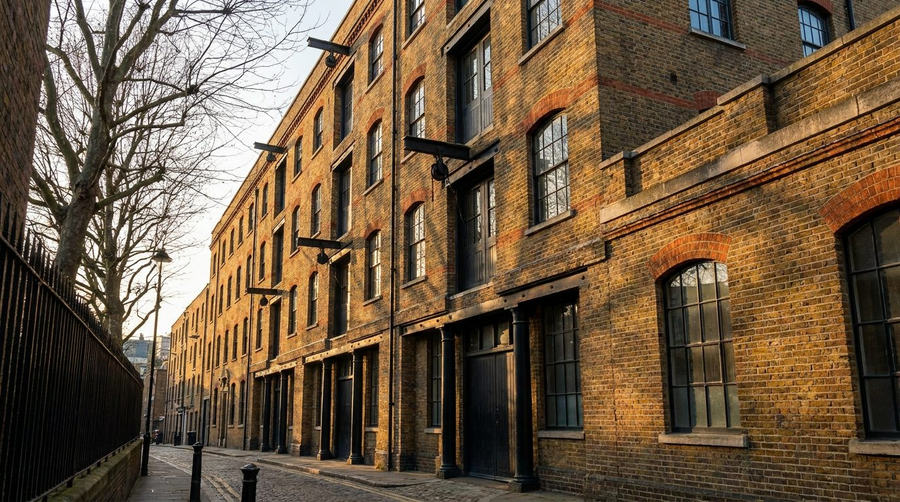
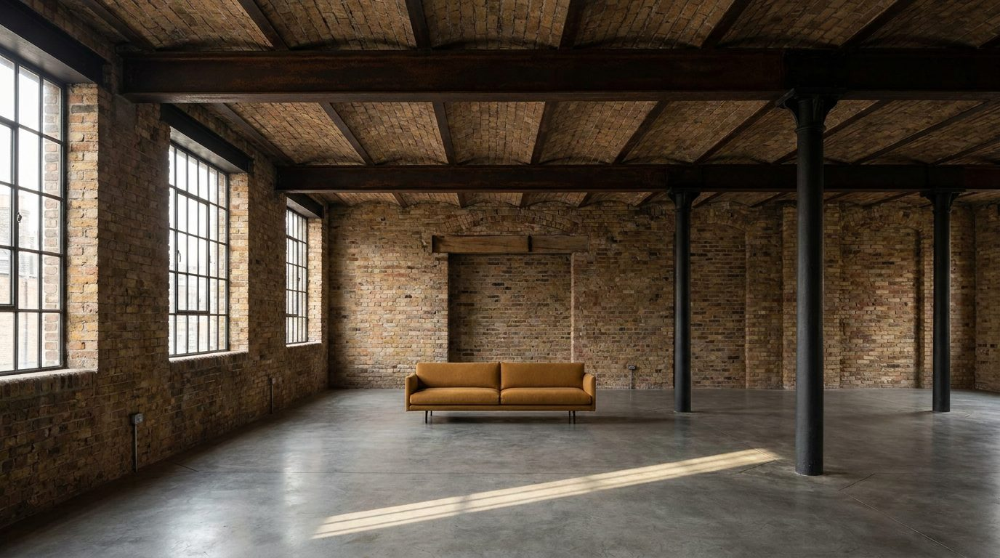

Atlante · INT-GB-02 · Regno Unito · Europa
Loft in magazzino vittoriano a Clerkenwell, mattoni, ghisa e ferro nero
Esempi · esterno e interno


Perché funziona
A Londra il loft in un magazzino vittoriano è la forma che il cliente creativo compra quando rifiuta la townhouse: scala industriale e materia vera. Al catalogo serve perché è la quinta opposta alla georgiana dello stesso paese, e perché le aperture industriali permettono di mostrare il mobile controluce come nessun'altra location europea. Il made in Italy entra come oggetto singolo e forte: un divano importante, un tavolo in pietra o ferro, tessuti pesanti che reggono il mattone. Non deve diventare la fabbrica-museo: niente insegne dipinte, niente tubi lucidi, niente piante da ufficio creativo. Il colore è un accento, non un allestimento.
Architettura · elementi riproducibili
- colonne in ghisa 200 mm di diametro, passo 4200 mm, capitello a mensola 300 mm
- soffitto a travetti in acciaio 4,6 m, putrelle IPN 240 mm a vista, solaio in voltine
- apertura di carico 2400 x 3000 mm con carrucola a braccio e porta a due ante in legno
- serramento industriale a griglia 1800 x 2600 mm, profilo in ferro 45 mm, vetro singolo
- pavimento in cemento levigato con giunti di contrazione ogni 4000 mm
- pareti in mattone a vista 350 mm con archi di scarico ribassati sulle aperture
- un divano basso 2600 mm in lana ocra e un tavolo in ferro 1800 mm: nessun altro arredo
Fatto verificato: dal secondo Ottocento i magazzini adottano colonne in ghisa e poi montanti in acciaio al posto dei pilastri in muratura, tettoie a denti di sega, carrucole che sollevano i carichi dalle aperture di piano e grandi portoni al piano terra; innovazioni in uso comune entro la metà del XIX secolo.
Fatto verificato: con la rivoluzione industriale Clerkenwell diventa centro di birrerie, distillerie e industria tipografica, con reputazione particolare nella costruzione di orologi, cronometri marini e segnatempo; nel Novecento si afferma come centro di architettura e design.
Fatto verificato: a Shoreditch nel Seicento si insediano tessitori di seta ugonotti, e nell'Ottocento il quartiere è anche sede dell'industria del mobile, oggi ricordata dal Museum of the Home su Kingsland Road.
Valutazione: il registro è loud per materia e scala, non per colore: mattone, ghisa e ocra segnaletica bastano, e il nero va tenuto opaco per non fare teatro industriale da esposizione.
Luce
Prompt di generazione (EN)
Interior photograph of a converted Victorian warehouse loft in Clerkenwell, London, 4.6 m exposed steel joist ceiling with IPN 240 beams and brick jack arches, 200 mm cast-iron columns at 4200 mm centres, raw London stock brick walls with 10 mm mortar joints, polished concrete floor with saw cuts every 4000 mm, a 2400 x 3000 mm former loading opening with a timber hoist beam, industrial 1800 x 2600 mm gridded iron windows. One low 2600 mm ochre wool sofa is the only furniture. Single key light from the north-west window on camera left, 5400 K, diffuse with one low raking shaft at 16 degrees, deep clean shadows under the beams, no fill, neutral white balance. 24 mm lens at 1.4 m, two-point perspective, verticals parallel, slightly warm brick with matte blacks, no people, no text, no logos.